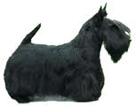

<table border="0" class="layout">
    <tbody>
        <tr>
            <td valign="top">
                <div class="holster">
                    <div class="block_container s3 b-text b-static-text user_css_12816005438" id="e_12777980833">
                        <p> </p>
                    </div>
                    <div class="block_container s3 b-image txt-center" id="e_1282814742550"><span></span></div>
                </div>
            </td>
            <td>
                <div class="holster">
                    <div class="block_container s3 b-text b-static-text user_css_12816005438" id="e_128281455356">
                        <p style="text-align: center;"><strong><span style="color: blue;">Скотч Терьер</span></strong></p>
                        <p style="text-align: justify;"><strong><span style="color: blue;">Из истории породы:</span></strong><span style="color: blue;"> шотландский терьер произошел от древних видов норных собак. До середины прошлого века владельцы коротконогих жесткошерстных терьеров обращали внимание не столько на внешний вид своих питомцев, сколько на рабочие качества. С шотландским терьером охотились на барсука, лису, выдру, он должен был уметь поднимать птицу на крыло. Шотландский терьер, некогда носивший название абердинского, существовал в различных формах много веков. Но лишь в 80-х гг. прошлого века в Англии и Шотландии возникли клубы любителей этой породы, и был выработан стандарт породы, с небольшими изменениями, сохранившийся до наших дней. Шотландский терьер был одним из первых жесткошерстных терьеров, которые на рубеже 19-20 вв. стал успешно разводиться и в других странах. Причем, если до 1932 года он признавался только как охотничья собака, то с этого времени он отнесен к разряду сторожевых и домашних собак. В России впервые эти собаки появились в 30-е годы, но по-настоящему порода стала развиваться только в послевоенный период. Популяризации этой породы у нас активно способствовал артист цирка Румянцев (клоун Карандаш). Его Никс был, чуть ли не первым скотч-терьером, появившимся в нашей стране. С Никсом, а позднее с его потомками, Карандаш много раз появлялся на арене, вызывая смех публики. Собака Карандаша получила постоянный сценический псевдоним - Клякса. Хотя она и не показывала на арене чудеса дрессуры, ее потешный вид и простенькие номера оживляли репризы клоуна. После войны породу "шотландский терьер" стали с увлечением разводить московские и петербургские любители. Сейчас популярность скотч-терьеров неуклонна растет. </span></p>
                        <p style="text-align: justify;"><strong><span style="color: blue;">Общая характеристика: </span></strong><span style="color: blue;">собаки энергичные, отважные, настороженные и подвижные, очень выносливы, умеренно злобные, поддаются дрессировке. </span></p>
                        <p style="text-align: justify;"><strong><span style="color: blue;">Содержание и уход:</span></strong><span style="color: blue;"> для скотти нет ничего лучше, как быть на воздухе, и было бы несправедливым лишать его возможности побегать по саду хотя бы несколько раз в день. Он одинаково охотно живёт и в комнате, и в конуре, которую, однако, зимой следует утеплять. Скотча необходимо ежедневно расчёсывать щёткой и гребнем, особенно его пушистую бородку, а весной и осенью подвергать триммингу. </span></p>
                        <p style="text-align: justify;"><strong><span style="color: blue;">Размеры:</span></strong><span style="color: blue;"> рост 25-28 см. Вес 8-10 кг.</span></p>
                        <p style="text-align: justify;"><span style="color: blue;">________________________________________</span></p>
                        <p style="text-align: justify;"><span style="color: blue;">&nbsp;</span></p>
                        <p> </p>
                        <p> </p>
                        <p> </p>
                        <p> </p>
                        <p> </p>
                        <p> </p>
                        <p> </p>
                        <p> </p>
                    </div>
                </div>
            </td>
        </tr>
    </tbody>
</table>​
